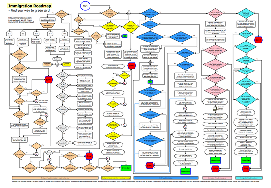
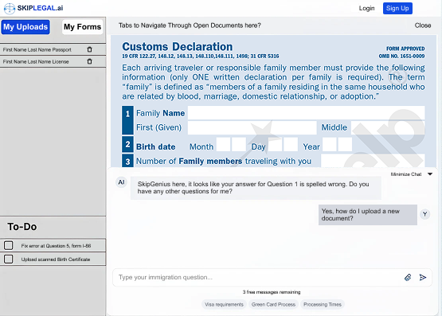

One typo on an immigration form can cost months and thousands of dollars. Could AI catch errors without users losing confidence?


1 2 3 4Four panels, introduced one at a time
Round 1 testers were overwhelmed by all four at once, so a tutorial now reveals them in sequence.
One question per screen
Problem → jargon at the trust-deciding moment.
Decision → isolated questions + inline definitions.
Outcome → users stay in flow.
Autofill or Manual
Problem → testers felt out of control.
Decision → explicit mode toggle; AI explains itself first.
Outcome → +37% trust rating.
Round 1
AI always on. No way to opt out, no explanation of what it changed.
Final MVP
Manual Fill toggle, document tabs and a persistent task list. Users choose — and can see — what the AI does.
"Users don't distrust AI because it makes mistakes — they distrust it because they can't tell when it might."
Next: test the security cues users asked for, and compare completion time across modes.